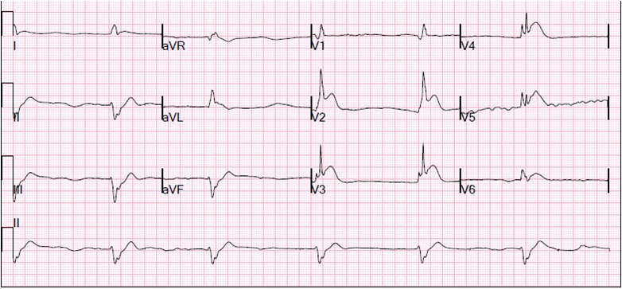

28/02/2014 — Ngừng tim: Đưa lên phòng thông tim trong khi vẫn đang ép tim
Bản dịch tiếng Việt của bài "Cardiac Arrest: To the cath lab with ongoing chest compressions" – Dr. Smith’s ECG Blog. Giữ nguyên toàn bộ 1 hình ảnh của bản gốc.
Một bệnh nhân nam ở độ tuổi 20, không có tiền sử bệnh lý, được phát hiện trong tình trạng ngừng tim. Trước đó anh ta đã than đau ngực. Nhân viên cấp cứu ngoài viện thấy bệnh nhân đang rung thất. Không rõ bệnh nhân có được người xung quanh hồi sinh tim phổi hay không. Sau một cú sốc điện, bệnh nhân chuyển sang hoạt động điện vô mạch (PEA), rồi lại rung thất (VF). Bệnh nhân đã được dùng nhiều liều epinephrine và cả amiodarone.
Dĩ nhiên bệnh nhân được ép tim liên tục suốt toàn bộ thời gian đó. Bệnh nhân đã được đặt đường thở King (King airway).
Khi đến khoa cấp cứu (ED), khoảng 50 phút sau ngừng tim, bệnh nhân vẫn còn ngừng tuần hoàn hoàn toàn. Kiểm tra nhịp cho thấy vô tâm thu. Tiếp tục ép tim bằng thiết bị LUCAS (ép tim cơ học). Bệnh nhân được đặt nội khí quản. ResQPod (thiết bị ngưỡng hít vào) được gắn vào ống nội khí quản để tăng hồi lưu tĩnh mạch và cung lượng tim. Bệnh nhân được dùng thêm epinephrine, bicarbonat và calci trong một nỗ lực cuối cùng nhằm hồi sức. CO2 cuối thì thở ra (end-tidal CO2) là 18-20, sau đó cải thiện lên 30-40.
Kiểm tra nhịp cho thấy một nhịp QRS rộng, chậm, đều, với ST chênh lên thấy rõ trên monitor. Siêu âm tim không thấy cử động đáng kể nào. Chỉ có một cử động “thoáng rung” (flicker) theo mỗi phức bộ điện.
Dùng thêm epinephrine, bicarbonat và atropine. SpO2 là 80%.
Một điện tâm đồ 12 chuyển đạo được ghi vào khoảng 70 phút sau ngừng tim:


[RBBB và LAFB, kèm ST chênh lên (STE), có liên quan đến nhồi máu cơ tim diện rộng do tắc thân chung động mạch vành trái hoặc LAD. Xem ca bệnh đáng kinh ngạc này. Và cả ca hồi sức tuyệt vời này sau 68 phút hồi sinh tim phổi.]
Ca bệnh tiếp diễn:
Tiếp tục ép tim. Bác sĩ can thiệp được mời hội chẩn. Phòng thông tim (cath lab) được kích hoạt và bác sĩ can thiệp cũng khuyên dùng tPA trong lúc chờ thông tim (khi đó là sáng sớm, ê-kíp không có mặt tại viện, và chụp mạch vành/PCI sẽ bị chậm trễ). Liều bolus và truyền duy trì được bắt đầu vào khoảng 80 phút sau ngừng tim.
Khí máu tĩnh mạch (VBG) lúc này cho thấy pH 6,94, pCO2 72, bicarbonat 18 và độ bão hòa O2 69%. Lactat là 11,3 mEq/L. SpO2 qua máy đo mạch nảy ở khoảng giữa mức 80% và CO2 cuối thì thở ra (etCO2) là 25 mmHg.
Esmolol được dùng để giúp ngăn rung thất tái phát. (Xem tóm tắt bên dưới: esmolol có thể có lợi trong rung thất kháng trị. Tôi sẽ lo rằng nó có hại trong PEA.)
Bệnh nhân được chuyển lên phòng thông tim vào khoảng 120 phút sau ngừng tim, trong khi vẫn đang ép tim bằng thiết bị LUCAS.
Kết cục:
Chụp mạch vành cho thấy tắc LAD; động mạch được tái thông và đặt một stent kim loại trần. Tuy nhiên, bệnh nhân không bao giờ hồi phục được chức năng tim.
Chụp mạch vành và PCI trong lúc hồi sinh tim phổi
Trong nghiên cứu này năm 2010, 11 trong số 36 bệnh nhân được PCI trong lúc ép tim bằng thiết bị LUCAS đã sống sót với tình trạng nguyên vẹn về thần kinh.
Trong nghiên cứu này năm 2007, PCI thành công ở cả 11 bệnh nhân, nhưng chỉ 3 trong số 11 người sống sót qua thủ thuật và không ai trong số đó được xuất viện còn sống.
Đây là một bản tổng hợp hay về nghiên cứu PCI trong lúc hồi sinh tim phổi, do Ron Johannsen thuộc Hennepin County Medical Center viết: Các tác giả kết luận:
“Dữ liệu hiện có không ủng hộ việc kích hoạt thường quy [tôi nhấn mạnh] phòng
thông tim cho các bệnh nhân chưa tái lập tuần hoàn tự nhiên (ROSC), ngay cả khi đang thực hiện hồi sinh tim phổi
cơ học. Liệu việc dùng LUCAS™ hay các thiết bị khác có
ảnh hưởng đến kết cục hay không vẫn chưa chắc chắn; chúng ta sẽ phải chờ hoàn tất
các thử nghiệm lâm sàng đang tiến hành.
Tuy nhiên, đối với bệnh nhân ngừng tim trong phòng thông tim,
có vẻ hợp lý khi tiến hành hồi sinh tim phổi cơ học nếu
sẵn có. Ngoài ra, các phương tiện hỗ trợ tim khác, như chuyển sớm
bệnh nhân sang ECMO hoặc các thiết bị hỗ trợ, nhằm cho phép làm
PCI ngay trong lúc ngừng tim, có thể được huy động cho một số bệnh nhân chọn lọc.”
Theo tôi, những ai nên được cân nhắc làm PCI trong lúc đang ép tim?
- Ngừng tim ngoài bệnh viện: Các bệnh nhân:
- Ngừng tim do rung thất có người chứng kiến, đặc biệt nếu trước đó có đau ngực
- Được người xung quanh hồi sinh tim phổi
- Tương đối trẻ, không có bệnh đồng mắc
- Đang được hồi sinh tim phổi chất lượng rất tốt (ví dụ: LUCAS)
- Có thời gian từ ngừng tim đến điều trị ngắn và có thể được PCI ngay.
- Ca này có PEA
- Nhưng rung thất là nhịp ban đầu
- Dù có PEA, nhưng PEA này bất thường ở chỗ hoạt động điện rất dễ nhận ra, có tổ chức và rõ ràng là do STEMI.
- Thời gian từ ngừng tim đến PCI có lẽ đã quá dài để kỳ vọng một kết cục tốt.
- Ngừng tim tại khoa cấp cứu do STEMI/tương đương STEMI: tương đối trẻ, không có bệnh đồng mắc, ép tim tốt bằng LUCAS, hoặc được đặt ECMO.
- Ngừng tim trong phòng thông tim
Tiêu sợi huyết khó có khả năng mang lại lợi ích
tPA chưa được chứng minh là có hiệu quả trong ngừng tim, dù là với PEA (gợi ý thuyên tắc phổi) hay các trường hợp khác. Nó thậm chí không làm giảm tử vong do sốc tim liên quan STEMI.
Giá trị của chụp mạch vành và PCI ở bệnh nhân đã tái lập tuần hoàn tự nhiên (ROSC):
Bài báo của Spaulding về dự đoán nguyên nhân mạch vành của ngừng tim: http://www.nejm.org/doi/pdf/10.1056/NEJM199706053362302
84 bệnh nhân được hồi sức và có nguyên nhân do tim, 60 bệnh nhân có bệnh động mạch vành (CAD) có ý nghĩa lâm sàng, 40 người có tắc mạch, 9 người trong số này không có ST chênh lên. Các yếu tố tiên đoán độc lập duy nhất của tắc mạch là ST chênh lên (tỷ số chênh (odds ratio) 4,3; khoảng tin cậy 95% từ 1,6 đến 2 [người dịch: cận trên của khoảng tin cậy nhỏ hơn tỷ số chênh, nhiều khả năng là lỗi đánh máy]; P 0,004) và đau ngực trước ngừng tim (tỷ số chênh 4,0; khoảng tin cậy 95% từ 1,3 đến 10,1; P 0,016). Sự hiện diện của một trong hai yếu tố này đi kèm giá trị tiên đoán dương và âm lần lượt là 0,63 và 0,74, còn sự hiện diện của cả hai đi kèm các giá trị 0,87 và 0,61. Những người đọc các điện tâm đồ này giỏi đến mức nào trong việc phát hiện thiếu máu cục bộ?
Nong bóng thành công là yếu tố tiên đoán sống còn tốt nhất: các yếu tố sau có giá trị tiên đoán sống còn: không cần thuốc tăng co bóp cơ tim trong lúc vận chuyển đến bệnh viện (tỷ số chênh 3,6; khoảng tin cậy 95% từ 1,1 đến 11,8; P 0,03) và nong bóng mạch vành thành công (tỷ số chênh 5,2; khoảng tin cậy 95% từ 1,1 đến 24,5; P 0,04).
Trong nghiên cứu của Silfvast (1991), 78% bệnh nhân rung thất có nguyên nhân là “bệnh mạch vành”.
Đây là một bài PowerPoint xuất sắc về sự cần thiết của chụp mạch vành và PCI sau khi tái lập tuần hoàn tự nhiên, do Demetris Yannopoulos soạn; ông cùng với Keith Lurie (tại đây, Minneapolis Medical Research Foundation, liên kết với Hennepin County Medical Center và University of Minnesota) đang thực hiện những nghiên cứu thực nghiệm đáng kinh ngạc về ngừng tim. Đây là một podcast của EMCrit về những tiến bộ ngoạn mục của họ.
Những bệnh nhân nào đã tái lập tuần hoàn tự nhiên sau ngừng tim ngoài bệnh viện cần chụp mạch vành/PCI ngay?
Ca bệnh mà Dr. Yannopoulos dùng trong bài trình bày của mình để minh họa điện tâm đồ “âm tính” ở một bệnh nhân ngừng tim và tắc LAD thực ra có biểu hiện thiếu máu cục bộ: có ST chênh lên rất kín đáo ở aVL và ST chênh xuống soi gương ở II, III và aVF. Nhiều người sẽ bỏ sót điều này. Những người đọc điện tâm đồ thật sự giỏi sẽ nhìn ra.
Hướng dẫn của tôi
- Nếu tìm thấy một nguyên nhân ngừng tim xác định khác, ngoài thiếu máu cục bộ, thì không có chỉ định chụp mạch vành/PCI.
- Nếu không tìm thấy nguyên nhân nào khác, thì bệnh nhân có bất kỳ yếu tố nào sau đây nên được làm PCI:
- Trước đó có đau ngực
- Rung thất mà không có bệnh cơ tim hay bệnh kênh ion đã biết từ trước
- Bất kỳ dấu hiệu thiếu máu cục bộ nào trên điện tâm đồ, theo diễn giải của một người đọc rất giỏi.
- Vì phần lớn người đọc điện tâm đồ không rất giỏi, nên trong đa số trường hợp, bất kỳ bệnh nhân nào chưa rõ nguyên nhân đều nên được đưa lên phòng thông tim
Tóm tắt nghiên cứu về Esmolol, sẽ được trình bày tại hội nghị Social Media and Critical Care 2014, Gold Coast, Úc:
Sử dụng Esmolol tại khoa cấp cứu trong rung thất kháng trị
Tác giả: Brian Driver
1
Tác giả: David Plummer
1
Tác giả: Stephen W Smith
1
- Hennepin County Medical Center, Minneapolis, MN, Hoa Kỳ
MỤC TIÊU
Chúng tôi mô tả
kết cục của các bệnh nhân được dùng esmolol trong lúc rung thất
kháng trị (RVF) tại khoa cấp cứu (ED).
PHƯƠNG PHÁP
Hồi cứu hồ sơ bệnh án
có cấu trúc tại một khoa cấp cứu đại học ở đô thị, gồm các bệnh nhân từ tháng 1 năm 2011 đến tháng 3
năm 2013 được dùng esmolol với chẩn đoán tại khoa cấp cứu là ngừng tim (CA),
rung thất, hoặc nhịp nhanh thất vô mạch, loại trừ
những bệnh nhân được dùng esmolol trước khi ngừng tim hoặc sau khi đã tái lập
tuần hoàn tự nhiên (ROSC) bền vững. Nhịp tim, xử trí ngừng tim, thời điểm
ROSC và kết cục của bệnh nhân được ghi nhận.
KẾT QUẢ
Sáu bệnh nhân nam
đáp ứng tiêu chuẩn chọn vào; một người bị loại vì esmolol được
dùng sau khi đã ROSC bền vững. Bốn trong năm bệnh nhân bị
ngừng tim ngoài bệnh viện; tất cả đều được ép tim cơ học tự động
bằng thiết bị LUCAS™. Tất cả bệnh nhân đều được dùng nhiều liều lặp lại epinephrine,
amiodarone, lidocaine, natri bicarbonat, cùng các thuốc hỗ trợ
khác. Khử rung được thực hiện nhiều lần ở mỗi bệnh nhân trước khi
dùng esmolol (trung vị = 6,5, khoảng 4-10). Một số có ROSC
tạm thời, nhưng không bệnh nhân nào có ROSC bền vững sau khi dùng các
thuốc này và khử rung. Tất cả bệnh nhân đều có nhịp rung thất vào thời điểm
dùng esmolol. Sau đó, liều nạp và liều truyền esmolol lần lượt là 500
mcg/kg và 50-100 mcg/kg/phút đã được dùng cho
tất cả bệnh nhân. Một bệnh nhân rung thất dai dẳng liên tục đạt ROSC tạm thời và
ba người khác đạt ROSC bền vững sau khi dùng esmolol kèm
khử rung lặp lại; hai người sống sót đến khi xuất viện với kết cục thần kinh
rất tốt.
KẾT LUẬN
Nên cân nhắc
dùng thuốc chẹn beta ở mọi bệnh nhân rung thất kháng trị tại khoa cấp cứu trước khi ngừng
các nỗ lực hồi sức.